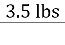

From the introduction, we learned that from an equivalence statement, it's possible to make a fraction which equals 1.

In this lesson, we will be learning how to use equilvalence statements to solve dimensional analysis (unit conversion) problems.
The conversion box is a nifty way to keep track of units. The box represents a series of fractions being multiplied together - things on the top half represent numerators, while things on the bottom half represent denominators.
For example, can be represented as .
To solve the equation when it is in separate fractions, you multiple all the numbers on the top from left-to-right, then do the same thing with the numbers on the bottom. 1 * 3 * 6 = 18 and 2 * 4 * 3 = 24; 18 over 24 then reduces to 3 over 4.
A similar approach is taken when working with the box method - all of the numbers on the top are multipled together, all of the numbers on the bottom are multiplied together, and then the top is divided by the bottom. Like we saw before, 1 * 3 * 6 = 18 and 2 * 4 * 3 = 24; 18 over 24 becomes 3 over 4.
At this point, you might be asking yourself, "What does this have to do with the introduction?". Well, let's consider this problem:
If there are 16 ounces in 1 pound, then how many ounces are in 3.5 pounds?
The first thing we're going to do is pick out the number which isn't an equivalency statement. In this problem, "16 ounces in 1 pound" is an equivalency statement, so we're going to use "3.5 pounds" instead. We're then going to put it in a box, like so:
>
The next thing to consider is the empty box on the bottom - whenever a number is "mising", assume that there's an invisible 1. In this case, "3.5 pounds" is being divided by an invisible "1".
Recall that the original problem wants us to get from pounds to ounces. So, we have to figure out how to get from pounds to ounces.
Here's the thing - as we saw in the introduction, a fraction with the same numbers on top and bottom cancel out to equal 1. We also saw before that we can make fractions out of the equivalency statement because they equal 1:
Bearing this in mind, we need to use a fraction which can cancel out "lbs" in the numerator - thus, we need to use "16 oz over 1 lb", since putting "lbs" in the denominator will cancel out the "lbs" in the numerator. This will result in the following:
Multiplying 3.5 by 16 gives 56; therefore, the answer to this problem is 56 ounces.
This wraps up how to use the conversion box! Next up is The Mole, in which we will be taking our first look at stoichiometry. You can also review the Introduction if you need to. Good luck and happy converting!